More Pictures of Native Plants and Pollinators!
| 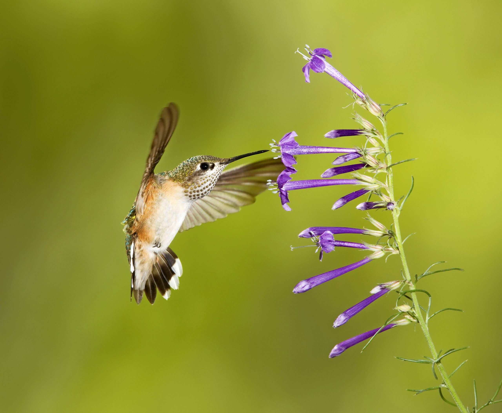 | 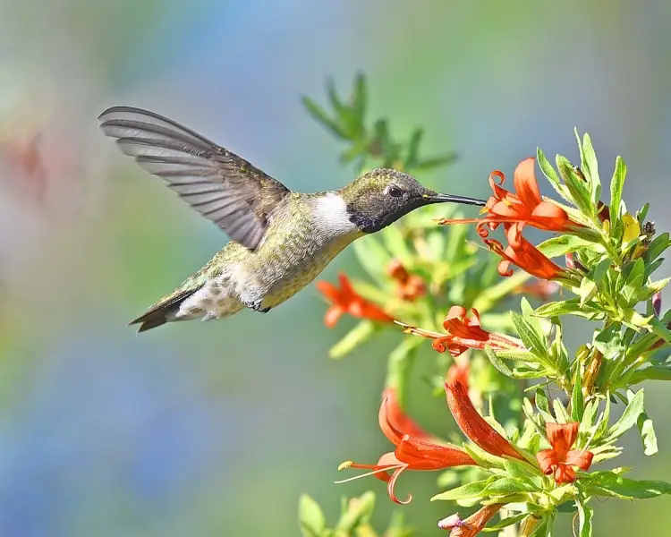 |

| 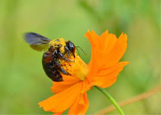 |
| 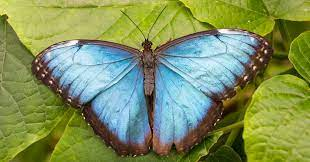 | 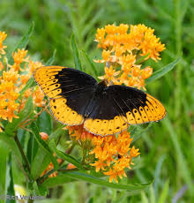 |
| 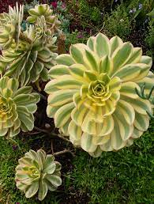 | 
|
Bee Balm and Lemon Mint

Bee balm is a native American plant not only known for its attract scarlet flowers that bloom in summertime but also its fragrant foliage. Slender, tubular flowers are produced in 2- to 3-inch-wide flower heads in June and July. Flower colors include white, pink, red, lavender, and purple. In the garden, its most frequent visitors are hummingbirds, bees,and butterflies because they have the long tongues required to reach the tubular flowers’ nectar. Bumblebees and a few other insects are too big to get into some of the smaller tubular flowers of some bee balms, so the insects practice something called “nectar robbing.” The insects punch a tiny hole at the base of the flower to access the nectar, bypassing the flower’s pollen and “robbing” it of its nectar.
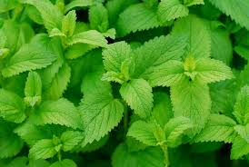Wild Columbine and Virgina BLuebell
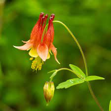The intricate red and yellow bell-like flowers of Wild Columbine (Aquilegia canadensis) attract a variety of pollinators. The deep nectaries are perfectly shaped for hummingbirds and long-tongued insects. Easily grown in average well-drained soil in full sun to shade, Columbine tolerates a wide range of soils, as long as drainage is good. Soil that is too rich encourages weaker stems and possibly shorter lifespans, while thin, sandy soils will produce a tight, compact plant that can live for many years. In optimum growing conditions it will self-seed freely. It's easy to collect the seeds from the plant and replant them in the location of your choice. Columbine is popular in shade gardens, rock gardens, cottage gardens or naturalized areas. The light, airy texture of the stems and flowers combines well with a variety of early bloomers such as Wild Geranium, Foamflower, and Wild Ginger.
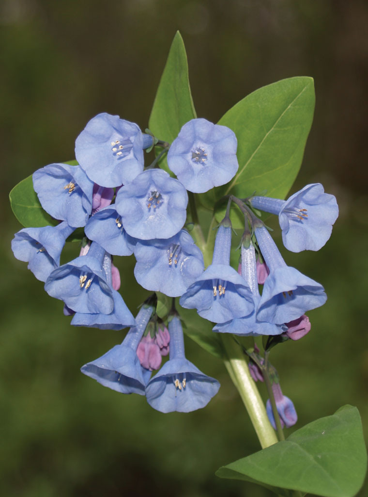Summer-flowering plants get a lot of attention for helping pollinators, but there are also insects active in the earlier part of the season, as long as temperatures are above freezing. Early bloomers are important sources of food for hummingbirds, butterflies, bees, and other insects, and Virginia bluebells are no exception. Because of their long flowers, Virginia bluebells are most often pollinated by hummingbird moths and long-tongued bees.Wild Trillium and Northern Oats
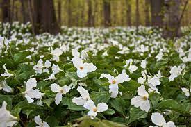Trillium are described as “spring ephemeral” flowers, meaning they are wildflowers that develop the aerial parts (i.e. stems, leaves and flowers) of the plant early each spring and then quickly bloom, and produce seed. The leaves often wither, leaving only underground structures (roots, rhizomes, and bulbs) for the remainder of the year. While they are beautiful to look at they are also extremely fragile, and picking them seriously injures the plant by preventing the leaf-like bracts from producing food for the next year, often effectively killing the plant and ensuring none will grow in its place. Some species of trillium are listed as threatened or endangered; picking these species may be illegal. Laws in some jurisdictions may restrict the commercial exploitation of trilliums and prohibit collection without the land owners permission 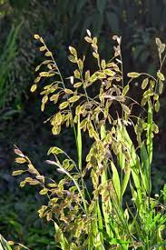Northern Sea Oats, Chasmanthium latifolium, is a very ornamental woodland grass with gorgeous seed heads that are beautiful in dried arrangements as well as in the garden. This native grass grows best in shaded areas with fertile soils. An excellent choice for planting under the light shade of oaks and hickories, or any semi-shaded garden. Plant it in a protected location. Several species of Lepitoptera, such as Northern Pearly-eye, Gemmed Satyr, Pepper and the Salt Skipper, are known to use Northern Sea Oats as a host plant.